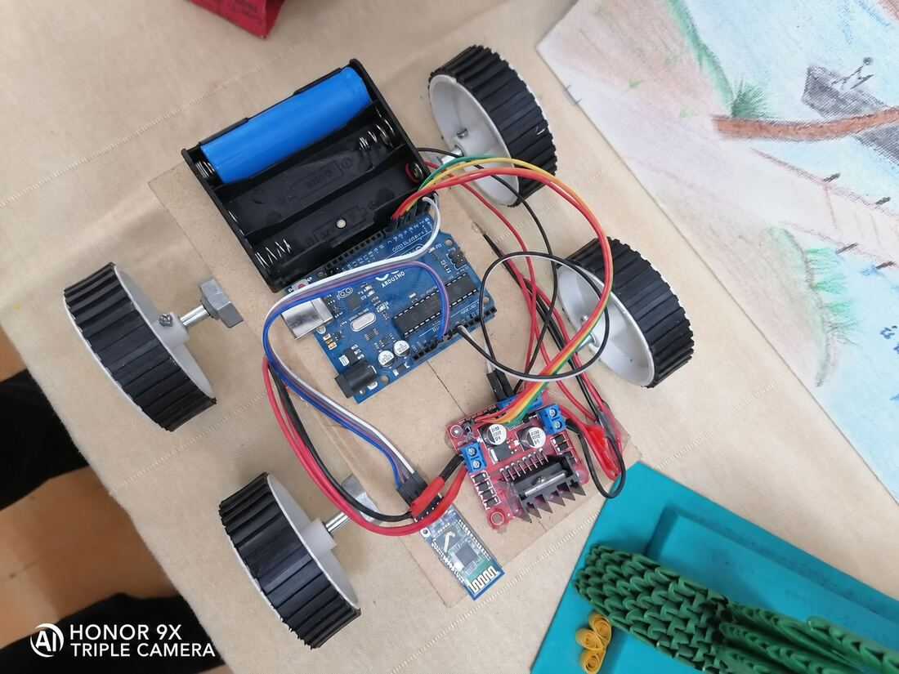

16 / CONTROLS
Bluetooth Controlled Bot
A bot driven over a wireless link from a phone, built as a controls and drivetrain exercise.
- Role
- Build and integration
- Context
- Independent build, Oct – Nov 2021
- Tools
- HC-05 Bluetooth module, L298N motor driver, Arduino Uno, 18650 pack
- Scope
- Four-wheel platform driven from a phone over Bluetooth
- Output
- A bot whose movement is fully controlled from a handset
- Skills
- Bluetooth (HC-05)
- Motor driver control
- Arduino
- Chassis assembly
- Power wiring
A bot that can be controlled from a wireless controller such as a phone to navigate its movements. The handset sends commands over Bluetooth to an HC-05 module, which passes them to the Arduino.
The Arduino drives the wheels through an L298N motor driver, so turning is done by driving the two sides at different speeds. The build covered the chassis, the power wiring from an 18650 pack, and the control logic.

HC-05 BluetoothL298N motor driverPhone controlled
Bluetooth (HC-05)Motor driver controlArduinoChassis assembly